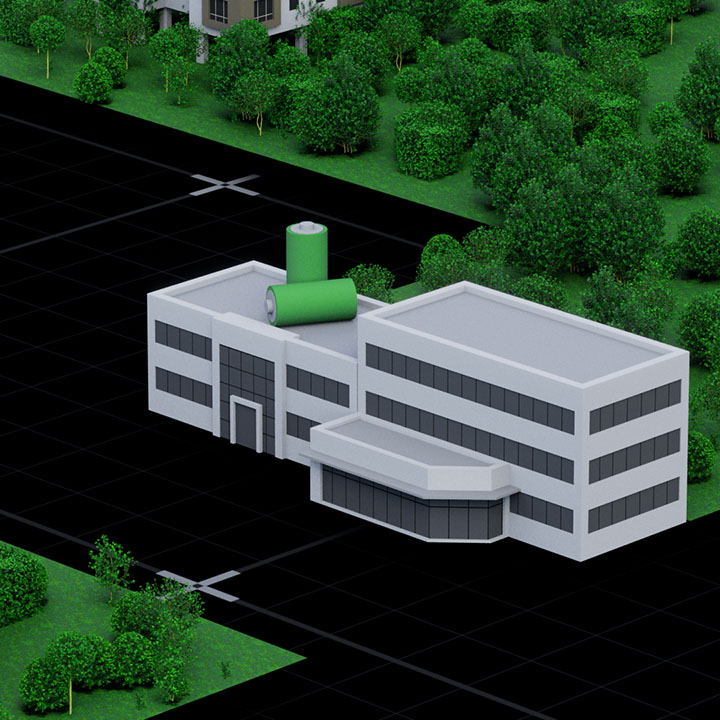

MIOTY, Zigbee Mesh, a 24h autonomous forecast loop and confirmed dispatch — purpose-built for the demands of flexibility management behind the meter.

The technology choice follows the asset topology — not the other way around.
Buildings, campuses, industrial premises, microgrids on one site
Geographically dispersed assets — rural PV, MV BESS, multiple remote sites
| Capability | MIOTY | LoRaWAN |
|---|---|---|
| Standard | IEC 62657-1 (international) | LoRa Alliance proprietary |
| Range | Up to 10 km | Up to 5 km |
| Messages/day/gateway | 1,500,000 | ~50,000 |
| Designed for | Energy infrastructure, utility grade | General IoT sensing |
| Dispatch latency | <1 second | Seconds to minutes |
| LTE independence | ✓ | ✓ |
KERN operates continuously — forecasting, reacting and dispatching without manual intervention.
1. FORECAST (rolling, 24h ahead) Per asset: state of charge, PV forecast (weather-based), load forecast (historical patterns), available flexibility window. Per portfolio: aggregated flexibility profile (MW, time, confidence). → Delivered to aggregator / platform as API feed. 2. DEMAND (inbound signal) Flexibility signal received from aggregator, utility or market: volume (kW), time window, direction (increase/decrease). 3. REBALANCE (real-time delta) KERN compares demand signal against current actual asset state. Detects deviations: weather change, load shift, asset failure. Adjusts dispatch plan autonomously — before deviation becomes critical. 4. DISPATCH (autonomous asset control) KERN selects assets, determines control sequence, sends commands. Execution via Zigbee Mesh (contiguous) or MIOTY (distributed). Asset protocols: Modbus, SunSpec, EEBUS, proprietary inverter APIs. 5. CONFIRMATION Asset-level execution confirmed back to KERN. Fulfillment status reported to aggregator / platform in real-time. Next forecast cycle starts immediately.
KERN normalises all asset types to a single data model — regardless of manufacturer or protocol.
Asset types
Communication protocols
All asset communication encrypted end-to-end — from sensor to platform.
Every asset authenticated by certificate — no unauthorised control possible.
Compliant with Redispatch 2.0 requirements for distributed generation control.
Compatible with controllable load regulations in Germany and Austria.